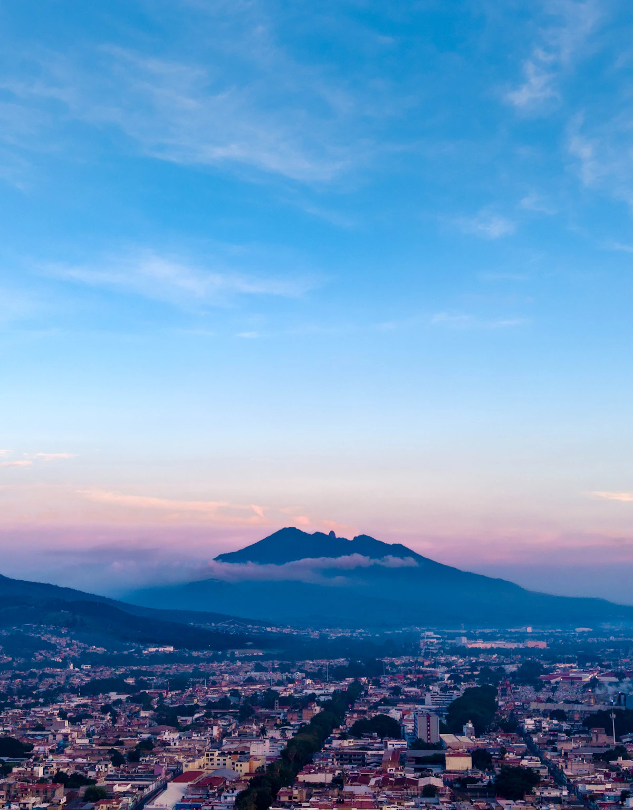
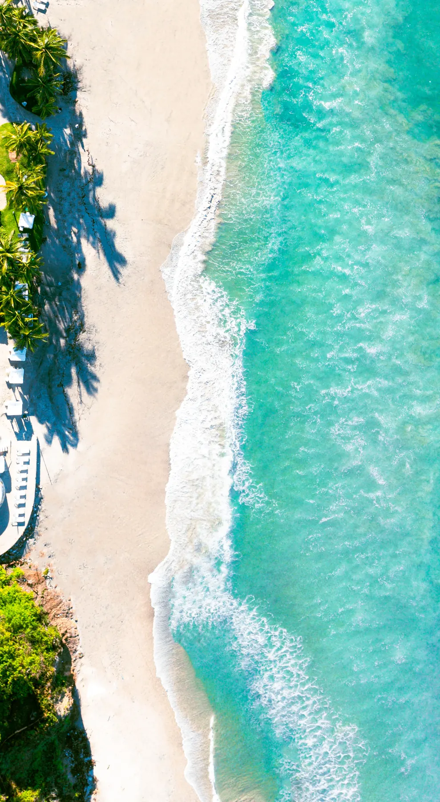

ESTANCIAS PARA COMPARTIR
ESTANCIAS PARA COMPARTIRUna casa. Todo tu mundo.
Imagina una estancia en la playa, la llegada resuelta y una cena que reúna a todos.
- Casa de lujo
- Transporte privado
- Chef privado
HECHO PARA DESCUBRIR NAYARIT
Un paisaje que sorprende. Una historia que se queda.
Aventura, estancias y momentos privados para vivir Nayarit a tu manera.
01 / EXPLORA A TU MANERA
Del cielo a la montaña, de la playa a tu mesa.
Elige una experiencia o combina servicios para
diseñar una estancia a tu medida.
Consulta experiencias y servicios sin reservar. La cobertura, el precio y la disponibilidad se confirman con el proveedor. Fotografías de inspiración; no representan inventario disponible ni proveedores afiliados.

DE AQUÍ.TÚ IMAGINAS. NOSOTROS CONECTAMOS.
Qué te gustaría vivir, con quién y cuándo.
Nayarit Experiences califica tu interés y lo canaliza al proveedor adecuado.
Disponibilidad, precio, condiciones, confirmación y cierre corresponden al proveedor.
Somos tu puente de contacto. La solicitud no es una reservación.
EL VIAJE APENAS COMIENZA
Categorías por incorporar. Aún no disponibles.
PRIVADAS / HECHAS A TU MEDIDA
Hay viajes que se disfrutan más cuando se sienten propios. Una casa para compartir, una mesa especial o una escapada con los detalles que importan para ustedes.
Cuéntanos lo que imaginas y combina tus intereses. Cada servicio se consulta con el proveedor que pueda darle forma.
Explora las experiencias privadasESTANCIAS PARA COMPARTIRImagina una estancia en la playa, la llegada resuelta y una cena que reúna a todos.
 CELEBRACIONES CON INTENCIÓN
CELEBRACIONES CON INTENCIÓNDale forma a una cena y una barra con el estilo de tu reunión, en el espacio que elijas.
 ESCAPADAS A TU MEDIDA
ESCAPADAS A TU MEDIDAEncuentra tu manera de descansar y consulta los traslados que conectan tu viaje.
Combinaciones de inspiración, no paquetes confirmados. Cada servicio requiere disponibilidad, propuesta y confirmación del proveedor. Fotografías de referencia.
EL JOURNAL / INSPIRACIÓN PARA TU VIAJE
 Destinos
DestinosUna guía para combinar estancia, transporte y experiencias privadas en Punta de Mita, empezando por lo que tu grupo necesita.
Leer historia Gastronomía
GastronomíaCómo preparar la idea de una cena y una barra privada en Nayarit: ocasión, menú, bebidas, espacio y alcance del servicio.
Leer historia Aventura
AventuraPrepara tu consulta sobre Ruta Capomo con Dirty Monkey Adventure y conecta esa idea con el resto de tu estancia.
Leer historia02 / TU SIGUIENTE HISTORIA
Cuéntanos qué tienes en mente.
Una fecha, una celebración o simplemente
las ganas de hacer algo diferente.

Nayarit, desde otra mirada.Estás explorando el MVP privado.Prepara y revisa tu solicitud. En esta versión tus datos no se envían ni se guardan.
VAMOS A CONOCER TU IDEA
LISTA PARA REVISAR
Esta es una vista previa. No se ha enviado ni almacenado tu solicitud.